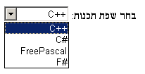

10. Rendering
User agents are not required to present HTML documents in any particular way. However, this section provides a set of suggestions for rendering HTML documents that, if followed, are likely to lead to a user experience that closely resembles the experience intended by the documents' authors. So as to avoid confusion regarding the normativity of this section, RFC2119 terms have not been used. Instead, the term "expected" is used to indicate behavior that will lead to this experience. For the purposes of conformance for user agents designated as supporting the suggested default rendering, the term "expected" in this section has the same conformance implications as the RFC2119-defined term "must".
10.1. Introduction
In general, user agents are expected to support CSS, and many of the suggestions in this section are expressed in CSS terms. User agents that use other presentation mechanisms can derive their expected behavior by translating from the CSS rules given in this section.
In the absence of style-layer rules to the contrary (e.g., author style sheets), user agents are expected to render an element so that it conveys to the user the meaning that the element represents, as described by this specification.
The suggestions in this section generally assume a visual output medium with a resolution of 96dpi or greater, but HTML is intended to apply to multiple media (it is a media-independent language). User agent implementors are encouraged to adapt the suggestions in this section to their target media.
An element is being rendered#being-renderedReferenced in:4.7.5. The img element4.7.7. The embed element (2)4.7.8. The object element (2)4.10.5. The input element4.10.6. The button element4.10.20. APIs for the text field selections4.10.21.2. Constraint validation4.10.21.3. The constraint validation API4.11.7. The dialog element4.12.4. The canvas element5.4.2. Data model (2) (3) (4) (5) (6)5.4.3. The tabindex attribute5.4.4. Processing model (2) (3)6.6.9. Navigating to a fragment identifier (2)10.1. Introduction (2)10.3.2. The page if it has any associated CSS layout boxes, SVG layout boxes, or some equivalent in other styling languages.
Just being off-screen does not mean the element is not being
rendered. The presence of the hidden attribute normally
means the element is not being rendered, though this might be overridden by the style
sheets.
User agents that do not honor author-level CSS style sheets are nonetheless expected to act as if they applied the CSS rules given in these sections in a manner consistent with this specification and the relevant CSS and Unicode specifications. [CSS-2015] [UNICODE] [BIDI]
This is especially important for issues relating to the display, unicode-bidi, and direction properties.
10.2. The CSS user agent style sheet and presentational hints
The CSS rules given in these subsections are, except where otherwise specified, expected to be used as part of the user-agent level style sheet defaults for all documents that contain html elements.
Some rules are intended for the author-level zero-specificity presentational hints part of the CSS cascade; these are explicitly called out as presentational hints#presentational-hintsReferenced in:10.2. The CSS user agent style sheet and presentational hints (2) (3)10.3.2. The page (2) (3) (4) (5) (6)10.3.3. Flow content (2) (3) (4) (5)10.3.4. Phrasing content (2) (3) (4) (5) (6)10.3.8. Lists10.3.9. Tables (2) (3) (4) (5) (6) (7) (8) (9)10.3.12. The hr element (2) (3) (4) (5)10.4.3. Attributes for embedded content and images (2)10.5.4. The input element as a text entry widget10.5.11. The marquee element10.5.15. The textarea element (2) (3)10.9. Unstyled XML documents.
Some of the rules regarding left and right margins are given here as appropriate for elements whose direction property is ltr, and are expected to be flipped around on elements whose direction property is rtl. These are marked "LTR-specific#ltr-specificReferenced in:10.5.3. The details element".
These markings only affect the handling of attribute values, not attribute names or element names.
When the text below says that an attribute attribute on an element element maps to the pixel length property#maps-to-the-pixel-length-propertyReferenced in:10.3.2. The page10.3.9. Tables (2) (3) (or properties) properties, it means that if element has an attribute attribute set, and parsing that attribute’s value using the rules for parsing non-negative integers doesn’t generate an error, then the user agent is expected to use the parsed value as a pixel length for a presentational hint for properties.
When the text below says that an attribute attribute on an element element maps to the dimension property#as-hints-for-the-renderingReferenced in:4.7.20. Dimension attributes10.3.9. Tables (2)10.3.12. The hr element10.4.3. Attributes for embedded content and images (2)10.5.11. The marquee element (2) (or properties) properties, it means that if element has an attribute attribute set, and parsing that attribute’s value using the rules for parsing dimension values doesn’t generate an error, then the user agent is expected to use the parsed dimension as the value for a presentational hint for properties, with the value given as a pixel length if the dimension was a length, and with the value given as a percentage if the dimension was a percentage.
When the text below says that an attribute attribute on an element element maps to the dimension property (ignoring zero)#map-to-the-dimension-property-ignoring-zeroReferenced in:10.3.9. Tables (2) (3) (4) (5) (6) (or properties) properties, it means that if element has an attribute attribute set, and parsing that attribute’s value using the rules for parsing non-zero dimension values doesn’t generate an error, then the user agent is expected to use the parsed dimension as the value for a presentational hint for properties, with the value given as a pixel length if the dimension was a length, and with the value given as a percentage if the dimension was a percentage.
When a user agent is to align descendants#align-descendantsReferenced in:10.2. The CSS user agent style sheet and presentational hints10.3.3. Flow content (2) (3) (4)10.3.9. Tables (2) (3) (4) of a node, the user agent is expected to
align only those descendants that have both their margin-left and margin-right properties
computing to a value other than auto, that are over-constrained and that have one of those two
margins with a used value forced to a greater value, and that do not themselves have an applicable align attribute. When multiple elements are to align a particular descendant, the most deeply nested such
element is expected to override the others. Aligned elements are expected to be aligned by having
the used values of their left and right margins be set accordingly.
10.3. Non-replaced elements
10.3.1. Hidden elements
@namespace url(http://www.w3.org/1999/xhtml); [hidden], area, base, basefont, datalist, head, link, menu[type=context i], meta, noembed, noframes, param, rp, script, source, style, template, track, title { display: none; } embed[hidden] { display: inline; height: 0; width: 0; } input[type=hidden i] { display none ! important; } @media (scripting) { noscript { display: none !important; } }
10.3.2. The page
@namespace url(http://www.w3.org/1999/xhtml); html, body { display: block; }
For each property in the table below, given a body element, the first attribute
that exists maps to the pixel length property on the body element. If
none of the attributes for a property are found, or if the value of the attribute that was found
cannot be parsed successfully, then, if the body element’s node document’s browsing context does not have its seamless browsing context flag set, a
default value of 8px is expected to be used for that property instead.
| Property | Source |
|---|---|
| margin-top | body element’s marginheight attribute
|
The body element’s container frame element’s marginheight attribute
| |
body element’s topmargin attribute
| |
| margin-right | body element’s marginwidth attribute
|
The body element’s container frame element’s marginwidth attribute
| |
body element’s rightmargin attribute
| |
| margin-bottom | body element’s marginheight attribute
|
The body element’s container frame element’s marginheight attribute
| |
body element’s bottommargin attribute
| |
| margin-left | body element’s marginwidth attribute
|
The body element’s container frame element’s marginwidth attribute
| |
body element’s leftmargin attribute
|
If the body element’s node document’s browsing context is a nested browsing context, and the browsing context container of that nested browsing context is a frame or iframe element, then
the container frame element#container-frame-elementReferenced in:10.3.2. The page (2) (3) (4) (5) of the body element is that frame or iframe element. Otherwise, there is no container frame element.
The above requirements imply that a page can change the margins of another page
(including one from another origin) using, for example, an iframe. This
is potentially a security risk, as it might in some cases allow an attack to contrive a situation
in which a page is rendered not as the author intended, possibly for the purposes of phishing or
otherwise misleading the user.
If a Document is in a nested browsing context, it is expected to be
positioned and sized to fit inside the content box of its browsing context container.
If a browsing context is not being rendered, it is expected to have a
viewport with zero width and zero height.
If the Document is in a nested browsing context, and the browsing context container of that nested browsing context is a frame or iframe element, and that element has a scrolling attribute, and that attribute’s value is an ASCII
case-insensitive match for the string "off", "noscroll", or "no", then the user agent is expected to
prevent any scroll bars from being shown for the viewport of the nested browsing context, regardless of the overflow property that applies to that viewport.
When a body element has a background attribute set to a non-empty value, the new value is expected to be resolved relative to the element, and if this is successful, the user agent is
expected to treat the attribute as a presentational hint setting the element’s background-image property to the resulting absolute URL.
When a body element has a bgcolor attribute
set, the new value is expected to be parsed using the rules for parsing a legacy color
value, and if that does not return an error, the user agent is expected to treat the
attribute as a presentational hint setting the element’s background-color property to the resulting color.
When a body element has a text attribute, its
value is expected to be parsed using the rules for parsing a legacy color value, and
if that does not return an error, the user agent is expected to treat the attribute as a presentational hint setting the element’s color property to
the resulting color.
When a body element has a link attribute, its
value is expected to be parsed using the rules for parsing a legacy color value, and
if that does not return an error, the user agent is expected to treat the attribute as a presentational hint setting the color property of any
element in the Document matching the ':link' pseudo-class to the resulting color.
When a body element has a vlink attribute,
its value is expected to be parsed using the rules for parsing a legacy color value,
and if that does not return an error, the user agent is expected to treat the attribute as a presentational hint setting the color property of any
element in the Document matching the ':visited' pseudo-class to the resulting
color.
When a body element has an alink attribute,
its value is expected to be parsed using the rules for parsing a legacy color value,
and if that does not return an error, the user agent is expected to treat the attribute as a presentational hint setting the color property of any
element in the Document matching the ':active' pseudo-class and either the ':link'
pseudo-class or the ':visited' pseudo-class to the resulting color.
10.3.3. Flow content
@namespace url(http://www.w3.org/1999/xhtml); address, blockquote, center, div, figure, figcaption, footer, form, header, hr, legend, listing, main, p, plaintext, pre, summary, xmp { display: block; } blockquote, figure, listing, p, plaintext, pre, xmp { margin-top: 1em; margin-bottom: 1em; } blockquote, figure { margin-left: 40px; margin-right: 40px; } address { font-style: italic; } listing, plaintext, pre, xmp { font-family: monospace; white-space: pre; } dialog:not([open]) { display: none; } dialog { position: absolute; left: 0; right: 0; width: fit-content; height: fit-content; margin: auto; border: solid; padding: 1em; background: white; color: black; } dialog::backdrop { position: fixed; top: 0; right: 0; bottom: 0; left: 0; background: rgba(0,0,0,0.1); } /* for small devices, modal dialogs go full-screen */ @media screen and (max-width: 540px) { dialog:modal { top: 0; width: auto; margin: 1em; } }
The following rules are also expected to apply, as presentational hints:
@namespace url(http://www.w3.org/1999/xhtml); pre[wrap] { white-space: pre-wrap; }
In quirks mode, the following rules are also expected to apply:
@namespace url(http://www.w3.org/1999/xhtml); form { margin-bottom: 1em; }
The center element, and the div element when it has an align attribute whose value is an ASCII
case-insensitive match for either the string "center" or the string
"middle", are expected to center text within themselves, as if they had
their text-align property set to center in a presentational hint, and to align descendants to the center.
The div element, when it has an align attribute whose value is an ASCII case-insensitive match for the string "left", is expected to left-align text within itself, as if it had its text-align property set to left in a presentational
hint, and to align descendants to the left.
The div element, when it has an align attribute whose value is an ASCII case-insensitive match for the string "right", is expected to right-align text within itself, as if it had its text-align property set to right in a presentational
hint, and to align descendants to the right.
The div element, when it has an align attribute whose value is an ASCII case-insensitive match for the string "justify", is expected to full-justify text within itself, as if it had its text-align property set to justify in a presentational
hint, and to align descendants to the left.
10.3.4. Phrasing content
@namespace url(http://www.w3.org/1999/xhtml); cite, dfn, em, i, var { font-style: italic; } b, strong { font-weight: bolder; } code, kbd, samp, tt { font-family: monospace; } big { font-size: larger; } small { font-size: smaller; } sub { vertical-align: sub; } sup { vertical-align: super; } sub, sup { line-height: normal; font-size: smaller; } ruby { display: ruby; } rb { display: ruby-base; white-space: nowrap; } rt { display: ruby-text; white-space: nowrap; font-size: 50%; font-variant-east-asian: ruby; text-emphasis: none; } rbc { display: ruby-base-container; } rtc { display: ruby-text-container; } ruby, rb, rt, rbc, rtc { unicode-bidi: isolate; } :link { color: #0000EE; } :visited { color: #551A8B; } :link:active, :visited:active { color: #FF0000; } :link, :visited { text-decoration: underline; cursor: pointer; } a:link[rel~=help], a:visited[rel~=help], area:link[rel~=help], area:visited[rel~=help] { cursor: help; } :focus { outline: auto; } mark { background: yellow; color: black; } /* this color is just a suggestion and can be changed based on implementation feedback */ abbr[title], acronym[title] { text-decoration: dotted underline; } ins, u { text-decoration: underline; } del, s, strike { text-decoration: line-through; } blink { text-decoration: blink; } q::before { content: open-quote; } q::after { content: close-quote; } br { display-outside: newline; } /* this also has bidi implications */ nobr { white-space: nowrap; } wbr { display-outside: break-opportunity; } /* this also has bidi implications */ nobr wbr { white-space: normal; }
The following rules are also expected to apply, as presentational hints:
@namespace url(http://www.w3.org/1999/xhtml); br[clear=left i] { clear: left; } br[clear=right i] { clear: right; } br[clear=all i], br[clear=both i] { clear: both; }
User agents that do not support correct ruby rendering are expected to render parentheses
around the text of rt elements in the absence of rp elements. [CSS3-RUBY]
User agents are expected to support the clear property on inline elements (in order to render br elements with clear attributes) in the manner
described in the non-normative note to this effect in CSS2.1.
The initial value for the color property is expected to be black. The initial value for the background-color property is expected to be transparent. The canvas' background is expected to be white.
When a font element has a color attribute, its value is expected to be parsed using the rules for parsing a legacy color
value, and if that does not return an error, the user agent is expected to treat the
attribute as a presentational hint setting the
element’s color property to the resulting color.
The font element is expected to
override the color of any text decoration that spans the text of the element to the used value of
the element’s color property.
When a font element has a face attribute, the user agent is expected to treat the attribute as a presentational hint setting the element’s font-family property to the attribute’s
value.
When a font element has a size attribute, the user agent is expected to use the following steps, known as the rules for
parsing a legacy font size, to treat the attribute as a presentational hint setting the element’s font-size property:
- Let input be the attribute’s value.
- Let position be a pointer into input, initially pointing at the start of the string.
- Skip whitespace.
- If position is past the end of input, there is no presentational hint. Abort these steps.
- If the character at position is a U+002B PLUS SIGN character (+), then let mode be relative-plus, and advance position to the next character. Otherwise, if the character at position is a U+002D HYPHEN-MINUS character (-), then let mode be relative-minus, and advance position to the next character. Otherwise, let mode be absolute.
- Collect a sequence of characters that are ASCII digits, and let the resulting sequence be digits.
- If digits is the empty string, there is no presentational hint. Abort these steps.
- Interpret digits as a base-ten integer. Let value be the resulting number.
-
If mode is relative-plus, then increment value by 3. If mode is relative-minus, then let value be the result of subtracting value from 3.
- If value is greater than 7, let it be 7.
- If value is less than 1, let it be 1.
-
Set font-size to the keyword corresponding to the value of value according to the following table:
value font-size keyword Notes 1 x-small 2 small 3 medium 4 large 5 x-large 6 xx-large 7 xxx-large see below The "xxx-large" value is a non-CSS value used here to indicate a font size 50% larger than "xx-large".
10.3.5. Bidirectional text
@namespace url(http://www.w3.org/1999/xhtml); [dir]:dir(ltr), bdi:dir(ltr), input[type=tel i]:dir(ltr) { direction: ltr; } [dir]:dir(rtl), bdi:dir(rtl) { direction: rtl; } address, blockquote, center, div, figure, figcaption, footer, form, header, hr, legend, listing, main, p, plaintext, pre, summary, xmp, article, aside, h1, h2, h3, h4, h5, h6, nav, section, table, caption, colgroup, col, thead, tbody, tfoot, tr, td, th, dir, dd, dl, dt, menu, ol, ul, li, bdi, output, [dir=ltr i], [dir=rtl i], [dir=auto i] { unicode-bidi: isolate; } bdo, bdo[dir] { unicode-bidi: isolate-override; } input[dir=auto i]:matches([type=search i], [type=tel i], [type=url i], [type=email i]), textarea[dir=auto i], pre[dir=auto i] { unicode-bidi: plaintext; } /* see prose for input elements whose type attribute is in the Text state */ /* the rules setting the 'content' property on br and wbr elements also has bidi implications */
When an input element’s dir attribute is in the auto state and its type attribute is in the Text state, then the user agent is
expected to act as if it had a user-agent-level style sheet rule setting the unicode-bidi property to plaintext.
Input fields (i.e., textarea elements, and input elements when their type attribute is in the Text, Search, Telephone, URL,
or E-mail state) are expected to present an editing
user interface with a directionality that matches the element’s direction property.
When the document’s character encoding is ISO-8859-8, the following rules are additionally expected to apply, following those above: [ENCODING]
@namespace url(http://www.w3.org/1999/xhtml); address, blockquote, center, div, figure, figcaption, footer, form, header, hr, legend, listing, main, p, plaintext, pre, summary, xmp, article, aside, h1, h2, h3, h4, h5, h6, nav, section, table, caption, colgroup, col, thead, tbody, tfoot, tr, td, th, dir, dd, dl, dt, menu, ol, ul, li, [dir=ltr i], [dir=rtl i], [dir=auto i], *|* { unicode-bidi: bidi-override; } input:not([type=submit i]):not([type=reset i]):not([type=button i]), textarea, keygen { unicode-bidi: normal; }
10.3.6. Quotes
This block is automatically generated from the Unicode Common Locale Data Repository. [CLDR]
User agents are expected to use either the block below (which will be regularly updated) or to
automatically generate their own copy directly from the source material. The language codes are
derived from the CLDR file names. The quotes are derived from the delimiter blocks, with fallback handled as specified in the CLDR documentation.
@namespace url(http://www.w3.org/1999/xhtml); :root { quotes: '\201c' '\201d' '\2018' '\2019' } /* “ ” ‘ ’ */ :root:lang(af), :not(:lang(af)) > :lang(af) { quotes: '\201c' '\201d' '\2018' '\2019' } /* “ ” ‘ ’ */ :root:lang(agq), :not(:lang(agq)) > :lang(agq) { quotes: '\201e' '\201d' '\201a' '\2019' } /* „ ” ‚ ’ */ :root:lang(ak), :not(:lang(ak)) > :lang(ak) { quotes: '\201c' '\201d' '\2018' '\2019' } /* “ ” ‘ ’ */ :root:lang(am), :not(:lang(am)) > :lang(am) { quotes: '\00ab' '\00bb' '\2039' '\203a' } /* « » ‹ › */ :root:lang(ar), :not(:lang(ar)) > :lang(ar) { quotes: '\201d' '\201c' '\2019' '\2018' } /* ” “ ’ ‘ */ :root:lang(asa), :not(:lang(asa)) > :lang(asa) { quotes: '\201c' '\201d' '\2018' '\2019' } /* “ ” ‘ ’ */ :root:lang(az-Cyrl), :not(:lang(az-Cyrl)) > :lang(az-Cyrl) { quotes: '\00ab' '\00bb' '\2039' '\203a' } /* « » ‹ › */ :root:lang(bas), :not(:lang(bas)) > :lang(bas) { quotes: '\00ab' '\00bb' '\201e' '\201c' } /* « » „ “ */ :root:lang(bem), :not(:lang(bem)) > :lang(bem) { quotes: '\201c' '\201d' '\2018' '\2019' } /* “ ” ‘ ’ */ :root:lang(bez), :not(:lang(bez)) > :lang(bez) { quotes: '\201c' '\201d' '\2018' '\2019' } /* “ ” ‘ ’ */ :root:lang(bg), :not(:lang(bg)) > :lang(bg) { quotes: '\201e' '\201c' '\201a' '\2018' } /* „ “ ‚ ‘ */ :root:lang(bm), :not(:lang(bm)) > :lang(bm) { quotes: '\00ab' '\00bb' '\201c' '\201d' } /* « » “ ” */ :root:lang(bn), :not(:lang(bn)) > :lang(bn) { quotes: '\201c' '\201d' '\2018' '\2019' } /* “ ” ‘ ’ */ :root:lang(br), :not(:lang(br)) > :lang(br) { quotes: '\00ab' '\00bb' '\2039' '\203a' } /* « » ‹ › */ :root:lang(brx), :not(:lang(brx)) > :lang(brx) { quotes: '\201c' '\201d' '\2018' '\2019' } /* “ ” ‘ ’ */ :root:lang(bs-Cyrl), :not(:lang(bs-Cyrl)) > :lang(bs-Cyrl) { quotes: '\201e' '\201c' '\201a' '\2018' } /* „ “ ‚ ‘ */ :root:lang(ca), :not(:lang(ca)) > :lang(ca) { quotes: '\201c' '\201d' '\00ab' '\00bb' } /* “ ” « » */ :root:lang(cgg), :not(:lang(cgg)) > :lang(cgg) { quotes: '\201c' '\201d' '\2018' '\2019' } /* “ ” ‘ ’ */ :root:lang(chr), :not(:lang(chr)) > :lang(chr) { quotes: '\201c' '\201d' '\2018' '\2019' } /* “ ” ‘ ’ */ :root:lang(cs), :not(:lang(cs)) > :lang(cs) { quotes: '\201e' '\201c' '\201a' '\2018' } /* „ “ ‚ ‘ */ :root:lang(da), :not(:lang(da)) > :lang(da) { quotes: '\201c' '\201d' '\2018' '\2019' } /* “ ” ‘ ’ */ :root:lang(dav), :not(:lang(dav)) > :lang(dav) { quotes: '\201c' '\201d' '\2018' '\2019' } /* “ ” ‘ ’ */ :root:lang(de), :not(:lang(de)) > :lang(de) { quotes: '\201e' '\201c' '\201a' '\2018' } /* „ “ ‚ ‘ */ :root:lang(de-CH), :not(:lang(de-CH)) > :lang(de-CH) { quotes: '\00ab' '\00bb' '\2039' '\203a' } /* « » ‹ › */ :root:lang(dje), :not(:lang(dje)) > :lang(dje) { quotes: '\201c' '\201d' '\2018' '\2019' } /* “ ” ‘ ’ */ :root:lang(dua), :not(:lang(dua)) > :lang(dua) { quotes: '\00ab' '\00bb' '\2018' '\2019' } /* « » ‘ ’ */ :root:lang(dyo), :not(:lang(dyo)) > :lang(dyo) { quotes: '\00ab' '\00bb' '\201c' '\201d' } /* « » “ ” */ :root:lang(dz), :not(:lang(dz)) > :lang(dz) { quotes: '\201c' '\201d' '\2018' '\2019' } /* “ ” ‘ ’ */ :root:lang(ebu), :not(:lang(ebu)) > :lang(ebu) { quotes: '\201c' '\201d' '\2018' '\2019' } /* “ ” ‘ ’ */ :root:lang(ee), :not(:lang(ee)) > :lang(ee) { quotes: '\201c' '\201d' '\2018' '\2019' } /* “ ” ‘ ’ */ :root:lang(el), :not(:lang(el)) > :lang(el) { quotes: '\00ab' '\00bb' '\201c' '\201d' } /* « » “ ” */ :root:lang(en), :not(:lang(en)) > :lang(en) { quotes: '\201c' '\201d' '\2018' '\2019' } /* “ ” ‘ ’ */ :root:lang(es), :not(:lang(es)) > :lang(es) { quotes: '\201c' '\201d' '\00ab' '\00bb' } /* “ ” « » */ :root:lang(et), :not(:lang(et)) > :lang(et) { quotes: '\201e' '\201c' '\201a' '\2018' } /* „ “ ‚ ‘ */ :root:lang(eu), :not(:lang(eu)) > :lang(eu) { quotes: '\201c' '\201d' '\00ab' '\00bb' } /* “ ” « » */ :root:lang(ewo), :not(:lang(ewo)) > :lang(ewo) { quotes: '\00ab' '\00bb' '\201c' '\201d' } /* « » “ ” */ :root:lang(fa), :not(:lang(fa)) > :lang(fa) { quotes: '\00ab' '\00bb' '\2039' '\203a' } /* « » ‹ › */ :root:lang(ff), :not(:lang(ff)) > :lang(ff) { quotes: '\201e' '\201d' '\201a' '\2019' } /* „ ” ‚ ’ */ :root:lang(fi), :not(:lang(fi)) > :lang(fi) { quotes: '\201d' '\201d' '\2019' '\2019' } /* ” ” ’ ’ */ :root:lang(fr), :not(:lang(fr)) > :lang(fr) { quotes: '\00ab' '\00bb' '\00ab' '\00bb' } /* « » « » */ :root:lang(fr-CA), :not(:lang(fr-CA)) > :lang(fr-CA) { quotes: '\00ab' '\00bb' '\2039' '\203a' } /* « » ‹ › */ :root:lang(fr-CH), :not(:lang(fr-CH)) > :lang(fr-CH) { quotes: '\00ab' '\00bb' '\2039' '\203a' } /* « » ‹ › */ :root:lang(gsw), :not(:lang(gsw)) > :lang(gsw) { quotes: '\00ab' '\00bb' '\2039' '\203a' } /* « » ‹ › */ :root:lang(gu), :not(:lang(gu)) > :lang(gu) { quotes: '\201c' '\201d' '\2018' '\2019' } /* “ ” ‘ ’ */ :root:lang(guz), :not(:lang(guz)) > :lang(guz) { quotes: '\201c' '\201d' '\2018' '\2019' } /* “ ” ‘ ’ */ :root:lang(ha), :not(:lang(ha)) > :lang(ha) { quotes: '\201c' '\201d' '\2018' '\2019' } /* “ ” ‘ ’ */ :root:lang(he), :not(:lang(he)) > :lang(he) { quotes: '\0022' '\0022' '\0027' '\0027' } /* " " ' ' */ :root:lang(hi), :not(:lang(hi)) > :lang(hi) { quotes: '\201c' '\201d' '\2018' '\2019' } /* “ ” ‘ ’ */ :root:lang(hr), :not(:lang(hr)) > :lang(hr) { quotes: '\201e' '\201c' '\201a' '\2018' } /* „ “ ‚ ‘ */ :root:lang(hu), :not(:lang(hu)) > :lang(hu) { quotes: '\201e' '\201d' '\00bb' '\00ab' } /* „ ” » « */ :root:lang(id), :not(:lang(id)) > :lang(id) { quotes: '\201c' '\201d' '\2018' '\2019' } /* “ ” ‘ ’ */ :root:lang(ig), :not(:lang(ig)) > :lang(ig) { quotes: '\201c' '\201d' '\2018' '\2019' } /* “ ” ‘ ’ */ :root:lang(it), :not(:lang(it)) > :lang(it) { quotes: '\00ab' '\00bb' '\201c' '\201d' } /* « » “ ” */ :root:lang(ja), :not(:lang(ja)) > :lang(ja) { quotes: '\300c' '\300d' '\300e' '\300f' } /* 「 」 『 』 */ :root:lang(jgo), :not(:lang(jgo)) > :lang(jgo) { quotes: '\00ab' '\00bb' '\2039' '\203a' } /* « » ‹ › */ :root:lang(jmc), :not(:lang(jmc)) > :lang(jmc) { quotes: '\201c' '\201d' '\2018' '\2019' } /* “ ” ‘ ’ */ :root:lang(kab), :not(:lang(kab)) > :lang(kab) { quotes: '\00ab' '\00bb' '\201c' '\201d' } /* « » “ ” */ :root:lang(kam), :not(:lang(kam)) > :lang(kam) { quotes: '\201c' '\201d' '\2018' '\2019' } /* “ ” ‘ ’ */ :root:lang(kde), :not(:lang(kde)) > :lang(kde) { quotes: '\201c' '\201d' '\2018' '\2019' } /* “ ” ‘ ’ */ :root:lang(kea), :not(:lang(kea)) > :lang(kea) { quotes: '\201c' '\201d' '\2018' '\2019' } /* “ ” ‘ ’ */ :root:lang(khq), :not(:lang(khq)) > :lang(khq) { quotes: '\201c' '\201d' '\2018' '\2019' } /* “ ” ‘ ’ */ :root:lang(ki), :not(:lang(ki)) > :lang(ki) { quotes: '\201c' '\201d' '\2018' '\2019' } /* “ ” ‘ ’ */ :root:lang(kkj), :not(:lang(kkj)) > :lang(kkj) { quotes: '\00ab' '\00bb' '\2039' '\203a' } /* « » ‹ › */ :root:lang(kln), :not(:lang(kln)) > :lang(kln) { quotes: '\201c' '\201d' '\2018' '\2019' } /* “ ” ‘ ’ */ :root:lang(km), :not(:lang(km)) > :lang(km) { quotes: '\201c' '\201d' '\2018' '\2019' } /* “ ” ‘ ’ */ :root:lang(kn), :not(:lang(kn)) > :lang(kn) { quotes: '\201c' '\201d' '\2018' '\2019' } /* “ ” ‘ ’ */ :root:lang(ko), :not(:lang(ko)) > :lang(ko) { quotes: '\201c' '\201d' '\2018' '\2019' } /* “ ” ‘ ’ */ :root:lang(ksb), :not(:lang(ksb)) > :lang(ksb) { quotes: '\201c' '\201d' '\2018' '\2019' } /* “ ” ‘ ’ */ :root:lang(ksf), :not(:lang(ksf)) > :lang(ksf) { quotes: '\00ab' '\00bb' '\2018' '\2019' } /* « » ‘ ’ */ :root:lang(lag), :not(:lang(lag)) > :lang(lag) { quotes: '\201d' '\201d' '\2019' '\2019' } /* ” ” ’ ’ */ :root:lang(lg), :not(:lang(lg)) > :lang(lg) { quotes: '\201c' '\201d' '\2018' '\2019' } /* “ ” ‘ ’ */ :root:lang(ln), :not(:lang(ln)) > :lang(ln) { quotes: '\201c' '\201d' '\2018' '\2019' } /* “ ” ‘ ’ */ :root:lang(lo), :not(:lang(lo)) > :lang(lo) { quotes: '\201c' '\201d' '\2018' '\2019' } /* “ ” ‘ ’ */ :root:lang(lt), :not(:lang(lt)) > :lang(lt) { quotes: '\201e' '\201c' '\201e' '\201c' } /* „ “ „ “ */ :root:lang(lu), :not(:lang(lu)) > :lang(lu) { quotes: '\201c' '\201d' '\2018' '\2019' } /* “ ” ‘ ’ */ :root:lang(luo), :not(:lang(luo)) > :lang(luo) { quotes: '\201c' '\201d' '\2018' '\2019' } /* “ ” ‘ ’ */ :root:lang(luy), :not(:lang(luy)) > :lang(luy) { quotes: '\201e' '\201c' '\201a' '\2018' } /* „ “ ‚ ‘ */ :root:lang(lv), :not(:lang(lv)) > :lang(lv) { quotes: '\201c' '\201d' '\2018' '\2019' } /* “ ” ‘ ’ */ :root:lang(mas), :not(:lang(mas)) > :lang(mas) { quotes: '\201c' '\201d' '\2018' '\2019' } /* “ ” ‘ ’ */ :root:lang(mer), :not(:lang(mer)) > :lang(mer) { quotes: '\201c' '\201d' '\2018' '\2019' } /* “ ” ‘ ’ */ :root:lang(mfe), :not(:lang(mfe)) > :lang(mfe) { quotes: '\201c' '\201d' '\2018' '\2019' } /* “ ” ‘ ’ */ :root:lang(mg), :not(:lang(mg)) > :lang(mg) { quotes: '\00ab' '\00bb' '\201c' '\201d' } /* « » “ ” */ :root:lang(mgo), :not(:lang(mgo)) > :lang(mgo) { quotes: '\201c' '\201d' '\2018' '\2019' } /* “ ” ‘ ’ */ :root:lang(mk), :not(:lang(mk)) > :lang(mk) { quotes: '\201e' '\201c' '\201a' '\2018' } /* „ “ ‚ ‘ */ :root:lang(ml), :not(:lang(ml)) > :lang(ml) { quotes: '\201c' '\201d' '\2018' '\2019' } /* “ ” ‘ ’ */ :root:lang(mr), :not(:lang(mr)) > :lang(mr) { quotes: '\201c' '\201d' '\2018' '\2019' } /* “ ” ‘ ’ */ :root:lang(ms), :not(:lang(ms)) > :lang(ms) { quotes: '\201c' '\201d' '\2018' '\2019' } /* “ ” ‘ ’ */ :root:lang(mua), :not(:lang(mua)) > :lang(mua) { quotes: '\00ab' '\00bb' '\201c' '\201d' } /* « » “ ” */ :root:lang(my), :not(:lang(my)) > :lang(my) { quotes: '\201c' '\201d' '\2018' '\2019' } /* “ ” ‘ ’ */ :root:lang(naq), :not(:lang(naq)) > :lang(naq) { quotes: '\201c' '\201d' '\2018' '\2019' } /* “ ” ‘ ’ */ :root:lang(nb), :not(:lang(nb)) > :lang(nb) { quotes: '\00ab' '\00bb' '\2018' '\2019' } /* « » ‘ ’ */ :root:lang(nd), :not(:lang(nd)) > :lang(nd) { quotes: '\201c' '\201d' '\2018' '\2019' } /* “ ” ‘ ’ */ :root:lang(nl), :not(:lang(nl)) > :lang(nl) { quotes: '\201c' '\201d' '\2018' '\2019' } /* “ ” ‘ ’ */ :root:lang(nmg), :not(:lang(nmg)) > :lang(nmg) { quotes: '\201e' '\201d' '\00ab' '\00bb' } /* „ ” « » */ :root:lang(nn), :not(:lang(nn)) > :lang(nn) { quotes: '\00ab' '\00bb' '\2018' '\2019' } /* « » ‘ ’ */ :root:lang(nnh), :not(:lang(nnh)) > :lang(nnh) { quotes: '\00ab' '\00bb' '\201c' '\201d' } /* « » “ ” */ :root:lang(nus), :not(:lang(nus)) > :lang(nus) { quotes: '\201c' '\201d' '\2018' '\2019' } /* “ ” ‘ ’ */ :root:lang(nyn), :not(:lang(nyn)) > :lang(nyn) { quotes: '\201c' '\201d' '\2018' '\2019' } /* “ ” ‘ ’ */ :root:lang(pl), :not(:lang(pl)) > :lang(pl) { quotes: '\201e' '\201d' '\00ab' '\00bb' } /* „ ” « » */ :root:lang(pt), :not(:lang(pt)) > :lang(pt) { quotes: '\201c' '\201d' '\2018' '\2019' } /* “ ” ‘ ’ */ :root:lang(pt-PT), :not(:lang(pt-PT)) > :lang(pt-PT) { quotes: '\00ab' '\00bb' '\201c' '\201d' } /* « » “ ” */ :root:lang(rn), :not(:lang(rn)) > :lang(rn) { quotes: '\201d' '\201d' '\2019' '\2019' } /* ” ” ’ ’ */ :root:lang(ro), :not(:lang(ro)) > :lang(ro) { quotes: '\201e' '\201d' '\00ab' '\00bb' } /* „ ” « » */ :root:lang(rof), :not(:lang(rof)) > :lang(rof) { quotes: '\201c' '\201d' '\2018' '\2019' } /* “ ” ‘ ’ */ :root:lang(ru), :not(:lang(ru)) > :lang(ru) { quotes: '\00ab' '\00bb' '\201e' '\201c' } /* « » „ “ */ :root:lang(rw), :not(:lang(rw)) > :lang(rw) { quotes: '\00ab' '\00bb' '\2018' '\2019' } /* « » ‘ ’ */ :root:lang(rwk), :not(:lang(rwk)) > :lang(rwk) { quotes: '\201c' '\201d' '\2018' '\2019' } /* “ ” ‘ ’ */ :root:lang(saq), :not(:lang(saq)) > :lang(saq) { quotes: '\201c' '\201d' '\2018' '\2019' } /* “ ” ‘ ’ */ :root:lang(sbp), :not(:lang(sbp)) > :lang(sbp) { quotes: '\201c' '\201d' '\2018' '\2019' } /* “ ” ‘ ’ */ :root:lang(seh), :not(:lang(seh)) > :lang(seh) { quotes: '\201c' '\201d' '\2018' '\2019' } /* “ ” ‘ ’ */ :root:lang(ses), :not(:lang(ses)) > :lang(ses) { quotes: '\201c' '\201d' '\2018' '\2019' } /* “ ” ‘ ’ */ :root:lang(sg), :not(:lang(sg)) > :lang(sg) { quotes: '\00ab' '\00bb' '\201c' '\201d' } /* « » “ ” */ :root:lang(shi), :not(:lang(shi)) > :lang(shi) { quotes: '\00ab' '\00bb' '\201e' '\201d' } /* « » „ ” */ :root:lang(shi-Latn), :not(:lang(shi-Latn)) > :lang(shi-Latn) { quotes: '\00ab' '\00bb' '\201e' '\201d' } /* « » „ ” */ :root:lang(si), :not(:lang(si)) > :lang(si) { quotes: '\201c' '\201d' '\2018' '\2019' } /* “ ” ‘ ’ */ :root:lang(sk), :not(:lang(sk)) > :lang(sk) { quotes: '\201e' '\201c' '\201a' '\2018' } /* „ “ ‚ ‘ */ :root:lang(sl), :not(:lang(sl)) > :lang(sl) { quotes: '\201e' '\201c' '\201a' '\2018' } /* „ “ ‚ ‘ */ :root:lang(sn), :not(:lang(sn)) > :lang(sn) { quotes: '\201d' '\201d' '\2019' '\2019' } /* ” ” ’ ’ */ :root:lang(so), :not(:lang(so)) > :lang(so) { quotes: '\201c' '\201d' '\2018' '\2019' } /* “ ” ‘ ’ */ :root:lang(sq), :not(:lang(sq)) > :lang(sq) { quotes: '\201e' '\201c' '\201a' '\2018' } /* „ “ ‚ ‘ */ :root:lang(sr), :not(:lang(sr)) > :lang(sr) { quotes: '\201e' '\201c' '\201a' '\2018' } /* „ “ ‚ ‘ */ :root:lang(sr-Latn), :not(:lang(sr-Latn)) > :lang(sr-Latn) { quotes: '\201e' '\201c' '\201a' '\2018' } /* „ “ ‚ ‘ */ :root:lang(sv), :not(:lang(sv)) > :lang(sv) { quotes: '\201d' '\201d' '\2019' '\2019' } /* ” ” ’ ’ */ :root:lang(sw), :not(:lang(sw)) > :lang(sw) { quotes: '\201c' '\201d' '\2018' '\2019' } /* “ ” ‘ ’ */ :root:lang(swc), :not(:lang(swc)) > :lang(swc) { quotes: '\201c' '\201d' '\2018' '\2019' } /* “ ” ‘ ’ */ :root:lang(ta), :not(:lang(ta)) > :lang(ta) { quotes: '\201c' '\201d' '\2018' '\2019' } /* “ ” ‘ ’ */ :root:lang(te), :not(:lang(te)) > :lang(te) { quotes: '\201c' '\201d' '\2018' '\2019' } /* “ ” ‘ ’ */ :root:lang(teo), :not(:lang(teo)) > :lang(teo) { quotes: '\201c' '\201d' '\2018' '\2019' } /* “ ” ‘ ’ */ :root:lang(th), :not(:lang(th)) > :lang(th) { quotes: '\201c' '\201d' '\2018' '\2019' } /* “ ” ‘ ’ */ :root:lang(ti-ER), :not(:lang(ti-ER)) > :lang(ti-ER) { quotes: '\2018' '\2019' '\201c' '\201d' } /* ‘ ’ “ ” */ :root:lang(to), :not(:lang(to)) > :lang(to) { quotes: '\201c' '\201d' '\2018' '\2019' } /* “ ” ‘ ’ */ :root:lang(tr), :not(:lang(tr)) > :lang(tr) { quotes: '\201c' '\201d' '\2018' '\2019' } /* “ ” ‘ ’ */ :root:lang(twq), :not(:lang(twq)) > :lang(twq) { quotes: '\201c' '\201d' '\2018' '\2019' } /* “ ” ‘ ’ */ :root:lang(tzm), :not(:lang(tzm)) > :lang(tzm) { quotes: '\201c' '\201d' '\2018' '\2019' } /* “ ” ‘ ’ */ :root:lang(uk), :not(:lang(uk)) > :lang(uk) { quotes: '\00ab' '\00bb' '\201e' '\201c' } /* « » „ “ */ :root:lang(ur), :not(:lang(ur)) > :lang(ur) { quotes: '\201d' '\201c' '\2019' '\2018' } /* ” “ ’ ‘ */ :root:lang(vai), :not(:lang(vai)) > :lang(vai) { quotes: '\201c' '\201d' '\2018' '\2019' } /* “ ” ‘ ’ */ :root:lang(vai-Latn), :not(:lang(vai-Latn)) > :lang(vai-Latn) { quotes: '\201c' '\201d' '\2018' '\2019' } /* “ ” ‘ ’ */ :root:lang(vi), :not(:lang(vi)) > :lang(vi) { quotes: '\201c' '\201d' '\2018' '\2019' } /* “ ” ‘ ’ */ :root:lang(vun), :not(:lang(vun)) > :lang(vun) { quotes: '\201c' '\201d' '\2018' '\2019' } /* “ ” ‘ ’ */ :root:lang(xh), :not(:lang(xh)) > :lang(xh) { quotes: '\2018' '\2019' '\201c' '\201d' } /* ‘ ’ “ ” */ :root:lang(xog), :not(:lang(xog)) > :lang(xog) { quotes: '\201c' '\201d' '\2018' '\2019' } /* “ ” ‘ ’ */ :root:lang(yav), :not(:lang(yav)) > :lang(yav) { quotes: '\00ab' '\00bb' '\00ab' '\00bb' } /* « » « » */ :root:lang(yo), :not(:lang(yo)) > :lang(yo) { quotes: '\201c' '\201d' '\2018' '\2019' } /* “ ” ‘ ’ */ :root:lang(zh), :not(:lang(zh)) > :lang(zh) { quotes: '\201c' '\201d' '\2018' '\2019' } /* “ ” ‘ ’ */ :root:lang(zh-Hant), :not(:lang(zh-Hant)) > :lang(zh-Hant) { quotes: '\300c' '\300d' '\300e' '\300f' } /* 「 」 『 』 */ :root:lang(zu), :not(:lang(zu)) > :lang(zu) { quotes: '\201c' '\201d' '\2018' '\2019' } /* “ ” ‘ ’ */
10.3.7. Sections and headings
@namespace url(http://www.w3.org/1999/xhtml); article, aside, h1, h2, h3, h4, h5, h6, nav, section { display: block; } h1 { margin-top: 0.67em; margin-bottom: 0.67em; font-size: 2.00em; font-weight: bold; } h2 { margin-top: 0.83em; margin-bottom: 0.83em; font-size: 1.50em; font-weight: bold; } h3 { margin-top: 1.00em; margin-bottom: 1.00em; font-size: 1.17em; font-weight: bold; } h4 { margin-top: 1.33em; margin-bottom: 1.33em; font-size: 1.00em; font-weight: bold; } h5 { margin-top: 1.67em; margin-bottom: 1.67em; font-size: 0.83em; font-weight: bold; } h6 { margin-top: 2.33em; margin-bottom: 2.33em; font-size: 0.67em; font-weight: bold; }
In the following CSS block, x is shorthand for the following selector: :matches(article, aside, nav, section)
@namespace url(http://www.w3.org/1999/xhtml); x h1 { margin-top: 0.83em; margin-bottom: 0.83em; font-size: 1.50em; } x x h1 { margin-top: 1.00em; margin-bottom: 1.00em; font-size: 1.17em; } x x x h1 { margin-top: 1.33em; margin-bottom: 1.33em; font-size: 1.00em; } x x x x h1 { margin-top: 1.67em; margin-bottom: 1.67em; font-size: 0.83em; } x x x x x h1 { margin-top: 2.33em; margin-bottom: 2.33em; font-size: 0.67em; }
The shorthand is used to keep this block at least mildly readable.
10.3.8. Lists
@namespace url(http://www.w3.org/1999/xhtml); dir, dd, dl, dt, menu, ol, ul { display: block; } li { display: list-item; } dir, dl, menu, ol, ul { margin-top: 1em; margin-bottom: 1em; } :matches(dir, dl, menu, ol, ul) :matches(dir, dl, menu, ol, ul) { margin-top: 0; margin-bottom: 0; } dd { margin-left: 40px; } /* LTR-specific: use 'margin-right' for rtl elements */ dir, menu, ol, ul { padding-left: 40px; } /* LTR-specific: use 'padding-right' for rtl elements */ ol { list-style-type: decimal; } dir, menu, ul { list-style-type: disc; } :matches(dir, menu, ol, ul) :matches(dir, menu, ul) { list-style-type: circle; } :matches(dir, menu, ol, ul) :matches(dir, menu, ol, ul) :matches(dir, menu, ul) { list-style-type: square; }
The following rules are also expected to apply, as presentational hints:
@namespace url(http://www.w3.org/1999/xhtml); ol[type=1], li[type=1] { list-style-type: decimal; } ol[type=a], li[type=a] { list-style-type: lower-alpha; } ol[type=A], li[type=A] { list-style-type: upper-alpha; } ol[type=i], li[type=i] { list-style-type: lower-roman; } ol[type=I], li[type=I] { list-style-type: upper-roman; } ul[type=none i], li[type=none i] { list-style-type: none; } ul[type=disc i], li[type=disc i] { list-style-type: disc; } ul[type=circle i], li[type=circle i] { list-style-type: circle; } ul[type=square i], li[type=square i] { list-style-type: square; }
In the above stylesheet, the attribute selectors for the ol and li elements are expected to be treated as case-sensitive.
When rendering li elements, non-CSS user agents are expected to use the ordinal value of the li element to render the counter in the list item
marker.
This specification does not yet define the
CSS-specific rules for rendering li elements, because CSS doesn’t yet provide
sufficient hooks for this purpose.
10.3.9. Tables
@namespace url(http://www.w3.org/1999/xhtml); table { display: table; } caption { display: table-caption; } colgroup, colgroup[hidden] { display: table-column-group; } col, col[hidden] { display: table-column; } thead, thead[hidden] { display: table-header-group; } tbody, tbody[hidden] { display: table-row-group; } tfoot, tfoot[hidden] { display: table-footer-group; } tr, tr[hidden] { display: table-row; } td, th, td[hidden], th[hidden] { display: table-cell; } colgroup[hidden], col[hidden], thead[hidden], tbody[hidden], tfoot[hidden], tr[hidden], td[hidden], th[hidden] { visibility: collapse; } table { box-sizing: border-box; border-spacing: 2px; border-collapse: separate; text-indent: initial; } td, th { padding: 1px; } th { font-weight: bold; } thead, tbody, tfoot, table > tr { vertical-align: middle; } tr, td, th { vertical-align: inherit; } table, td, th { border-color: gray; } thead, tbody, tfoot, tr { border-color: inherit; } table[rules=none i], table[rules=groups i], table[rules=rows i], table[rules=cols i], table[rules=all i], table[frame=void i], table[frame=above i], table[frame=below i], table[frame=hsides i], table[frame=lhs i], table[frame=rhs i], table[frame=vsides i], table[frame=box i], table[frame=border i], table[rules=none i] > tr > td, table[rules=none i] > tr > th, table[rules=groups i] > tr > td, table[rules=groups i] > tr > th, table[rules=rows i] > tr > td, table[rules=rows i] > tr > th, table[rules=cols i] > tr > td, table[rules=cols i] > tr > th, table[rules=all i] > tr > td, table[rules=all i] > tr > th, table[rules=none i] > thead > tr > td, table[rules=none i] > thead > tr > th, table[rules=groups i] > thead > tr > td, table[rules=groups i] > thead > tr > th, table[rules=rows i] > thead > tr > td, table[rules=rows i] > thead > tr > th, table[rules=cols i] > thead > tr > td, table[rules=cols i] > thead > tr > th, table[rules=all i] > thead > tr > td, table[rules=all i] > thead > tr > th, table[rules=none i] > tbody > tr > td, table[rules=none i] > tbody > tr > th, table[rules=groups i] > tbody > tr > td, table[rules=groups i] > tbody > tr > th, table[rules=rows i] > tbody > tr > td, table[rules=rows i] > tbody > tr > th, table[rules=cols i] > tbody > tr > td, table[rules=cols i] > tbody > tr > th, table[rules=all i] > tbody > tr > td, table[rules=all i] > tbody > tr > th, table[rules=none i] > tfoot > tr > td, table[rules=none i] > tfoot > tr > th, table[rules=groups i] > tfoot > tr > td, table[rules=groups i] > tfoot > tr > th, table[rules=rows i] > tfoot > tr > td, table[rules=rows i] > tfoot > tr > th, table[rules=cols i] > tfoot > tr > td, table[rules=cols i] > tfoot > tr > th, table[rules=all i] > tfoot > tr > td, table[rules=all i] > tfoot > tr > th { border-color: black; }
The following rules are also expected to apply, as presentational hints:
@namespace url(http://www.w3.org/1999/xhtml); table[align=left i] { float: left; } table[align=right i] { float: right; } table[align=center i] { margin-left: auto; margin-right: auto; } thead[align=absmiddle i], tbody[align=absmiddle i], tfoot[align=absmiddle i], tr[align=absmiddle i], td[align=absmiddle i], th[align=absmiddle i] { text-align: center; } caption[align=bottom i] { caption-side: bottom; } p[align=left i], h1[align=left i], h2[align=left i], h3[align=left i], h4[align=left i], h5[align=left i], h6[align=left i] { text-align: left; } p[align=right i], h1[align=right i], h2[align=right i], h3[align=right i], h4[align=right i], h5[align=right i], h6[align=right i] { text-align: right; } p[align=center i], h1[align=center i], h2[align=center i], h3[align=center i], h4[align=center i], h5[align=center i], h6[align=center i] { text-align: center; } p[align=justify i], h1[align=justify i], h2[align=justify i], h3[align=justify i], h4[align=justify i], h5[align=justify i], h6[align=justify i] { text-align: justify; } thead[valign=top i], tbody[valign=top i], tfoot[valign=top i], tr[valign=top i], td[valign=top i], th[valign=top i] { vertical-align: top; } thead[valign=middle i], tbody[valign=middle i], tfoot[valign=middle i], tr[valign=middle i], td[valign=middle i], th[valign=middle i] { vertical-align: middle; } thead[valign=bottom i], tbody[valign=bottom i], tfoot[valign=bottom i], tr[valign=bottom i], td[valign=bottom i], th[valign=bottom i] { vertical-align: bottom; } thead[valign=baseline i], tbody[valign=baseline i], tfoot[valign=baseline i], tr[valign=baseline i], td[valign=baseline i], th[valign=baseline i] { vertical-align: baseline; } td[nowrap], th[nowrap] { white-space: nowrap; } table[rules=none i], table[rules=groups i], table[rules=rows i], table[rules=cols i], table[rules=all i] { border-style: hidden; border-collapse: collapse; } table[border] { border-style: outset; } /* only if border is not equivalent to zero */ table[frame=void i] { border-style: hidden; } table[frame=above i] { border-style: outset hidden hidden hidden; } table[frame=below i] { border-style: hidden hidden outset hidden; } table[frame=hsides i] { border-style: outset hidden outset hidden; } table[frame=lhs i] { border-style: hidden hidden hidden outset; } table[frame=rhs i] { border-style: hidden outset hidden hidden; } table[frame=vsides i] { border-style: hidden outset; } table[frame=box i], table[frame=border i] { border-style: outset; } table[border] > tr > td, table[border] > tr > th, table[border] > thead > tr > td, table[border] > thead > tr > th, table[border] > tbody > tr > td, table[border] > tbody > tr > th, table[border] > tfoot > tr > td, table[border] > tfoot > tr > th { /* only if border is not equivalent to zero */ border-width: 1px; border-style: inset; } table[rules=none i] > tr > td, table[rules=none i] > tr > th, table[rules=none i] > thead > tr > td, table[rules=none i] > thead > tr > th, table[rules=none i] > tbody > tr > td, table[rules=none i] > tbody > tr > th, table[rules=none i] > tfoot > tr > td, table[rules=none i] > tfoot > tr > th, table[rules=groups i] > tr > td, table[rules=groups i] > tr > th, table[rules=groups i] > thead > tr > td, table[rules=groups i] > thead > tr > th, table[rules=groups i] > tbody > tr > td, table[rules=groups i] > tbody > tr > th, table[rules=groups i] > tfoot > tr > td, table[rules=groups i] > tfoot > tr > th, table[rules=rows i] > tr > td, table[rules=rows i] > tr > th, table[rules=rows i] > thead > tr > td, table[rules=rows i] > thead > tr > th, table[rules=rows i] > tbody > tr > td, table[rules=rows i] > tbody > tr > th, table[rules=rows i] > tfoot > tr > td, table[rules=rows i] > tfoot > tr > th { border-width: 1px; border-style: none; } table[rules=cols i] > tr > td, table[rules=cols i] > tr > th, table[rules=cols i] > thead > tr > td, table[rules=cols i] > thead > tr > th, table[rules=cols i] > tbody > tr > td, table[rules=cols i] > tbody > tr > th, table[rules=cols i] > tfoot > tr > td, table[rules=cols i] > tfoot > tr > th { border-width: 1px; border-style: none solid; } table[rules=all i] > tr > td, table[rules=all i] > tr > th, table[rules=all i] > thead > tr > td, table[rules=all i] > thead > tr > th, table[rules=all i] > tbody > tr > td, table[rules=all i] > tbody > tr > th, table[rules=all i] > tfoot > tr > td, table[rules=all i] > tfoot > tr > th { border-width: 1px; border-style: solid; } table[rules=groups i] > colgroup { border-left-width: 1px; border-left-style: solid; border-right-width: 1px; border-right-style: solid; } table[rules=groups i] > thead, table[rules=groups i] > tbody, table[rules=groups i] > tfoot { border-top-width: 1px; border-top-style: solid; border-bottom-width: 1px; border-bottom-style: solid; } table[rules=rows i] > tr, table[rules=rows i] > thead > tr, table[rules=rows i] > tbody > tr, table[rules=rows i] > tfoot > tr { border-top-width: 1px; border-top-style: solid; border-bottom-width: 1px; border-bottom-style: solid; }
In quirks mode, the following rules are also expected to apply:
@namespace url(http://www.w3.org/1999/xhtml); table { font-weight: initial; font-style: initial; font-variant: initial; font-size: initial; line-height: initial; white-space: initial; text-align: initial; }
For the purposes of the CSS table model, the col element is expected to be treated
as if it was present as many times as its span attribute specifies.
For the purposes of the CSS table model, the colgroup element, if it contains no col element, is expected to be treated as if it had as many such children as its span attribute specifies.
For the purposes of the CSS table model, the colspan and rowspan attributes on td and th elements are expected to provide the special knowledge regarding cells spanning rows and columns.
In HTML documents, the following rules are also expected to apply:
@namespace url(http://www.w3.org/1999/xhtml); :matches(table, thead, tbody, tfoot, tr) > form { display: none !important; }
The table element’s cellspacing attribute maps to the pixel length property border-spacing on the element.
The table element’s cellpadding attribute maps to the pixel length
properties padding-top, padding-right, padding-bottom, and padding-left of any td and th elements that have corresponding cells in the table corresponding to
the table element.
The table element’s hspace attribute maps to the dimension properties margin-left and margin-right on the table element.
The table element’s vspace attribute maps to the dimension properties margin-top and margin-bottom on the table element.
The table element’s height attribute maps to the dimension property (ignoring zero) height on the table element.
The table element’s width attribute maps to the dimension property (ignoring zero) width on the table element.
The col element’s width attribute maps
to the dimension property (ignoring zero) width on the col element.
The tr element’s height attribute maps
to the dimension property (ignoring zero) height on the tr element.
The td and th elements' height attributes map to the dimension
property (ignoring zero) height on the element.
The td and th elements' width attributes map to the dimension
property (ignoring zero) width on the element.
The caption element unless specified otherwise below, and the thead, tbody, tfoot, tr, td, and th elements when they have an align attribute whose value is an ASCII
case-insensitive match for either the string "center" or the string
"middle", are expected to center text within themselves, as if they had
their text-align property set to center in a presentational hint, and to align descendants to the center.
The caption, thead, tbody, tfoot, tr, td, and th elements, when they have an align attribute whose value is an ASCII case-insensitive match for
the string "left", are expected to left-align text within themselves, as if
they had their text-align property set to left in a presentational hint, and to align descendants to the left.
The caption, thead, tbody, tfoot, tr, td, and th elements, when they have an align attribute whose value is an ASCII case-insensitive match for
the string "right", are expected to right-align text within themselves, as
if they had their text-align property set to right in a presentational hint, and to align descendants to the right.
The caption, thead, tbody, tfoot, tr, td, and th elements, when they have an align attribute whose value is an ASCII case-insensitive match for
the string "justify", are expected to full-justify text within themselves,
as if they had their text-align property set to justify in a presentational hint, and to align descendants to the left.
User agents are expected to have a rule in their user agent stylesheet that matches th elements that have a parent node whose computed value for the text-align property is its initial value, whose declaration block consists of just a single declaration that
sets the text-align property to the value center.
When a table, thead, tbody, tfoot, tr, td, or th element has a background attribute set to a non-empty value, the new value is
expected to be resolved relative to the element, and if this is
successful, the user agent is expected to treat the attribute as a presentational hint setting the element’s background-image property to the resulting absolute URL.
When a table, thead, tbody, tfoot, tr, td, or th element has a bgcolor attribute set, the new value is expected to be parsed using the rules for parsing a legacy
color value, and if that does not return an error, the user agent is expected to treat the
attribute as a presentational hint setting the element’s background-color property to the resulting color.
When a table element has a bordercolor attribute, its value is expected to be parsed using the rules for parsing a legacy color
value, and if that does not return an error, the user agent is expected to treat the
attribute as a presentational hint setting the element’s border-top-color, border-right-color, border-bottom-color, and border-left-color properties to the resulting color.
The table element’s border attribute maps to the pixel length properties border-top-width, border-right-width, border-bottom-width, border-left-width on the
element. If the attribute is present but parsing the attribute’s value using the rules for
parsing non-negative integers generates an error, a default value of 1px is expected to be
used for that property instead.
Rules marked "only if border is not equivalent to zero"
in the CSS block above is expected to only be applied if the border attribute mentioned in the selectors for the rule is not
only present but, when parsed using the rules for parsing non-negative integers, is
also found to have a value other than zero or to generate an error.
In quirks mode, a td element or a th element that has a nowrap attribute but also has a width attribute whose value, when parsed using the rules for
parsing non-zero dimension values, is found to be a length (not an error or a number
classified as a percentage), is expected to have a presentational hint setting the element’s white-space property to normal,
overriding the rule in the CSS block above that sets it to nowrap.
User agents are expected to render sorting interface th elements in such a manner as to indicate that
activating the elements will cause the table to be sorted.
10.3.10. Margin collapsing quirks
A node is substantial#substantialReferenced in:10.3.10. Margin collapsing quirks (2) (3) (4) (5) if it is a text node that is not inter-element whitespace, or if it is an element node.
A node is blank#blankReferenced in:10.3.10. Margin collapsing quirks (2) if it is an element that contains no substantial nodes.
The elements with default margins#elements-with-default-marginsReferenced in:10.3.10. Margin collapsing quirks (2) (3) are the following elements: blockquote, dir, dl, h1, h2, h3, h4, h5, h6, listing, menu, ol, p, plaintext, pre, ul, xmp
In quirks mode, any element with default margins that is the child of a body, td, or th element and has no substantial previous siblings is expected to have a user-agent level style sheet rule that sets its margin-top property to zero.
In quirks mode, any element
with default margins that is the child of a body, td, or th element, has no substantial previous siblings, and is blank, is expected to have
a user-agent level style sheet rule that sets its margin-bottom property to zero also.
In quirks mode, any element
with default margins that is the child of a td or th element, has
no substantial following siblings, and is blank, is expected to have a user-agent level style sheet
rule that sets its margin-top property to zero.
In quirks mode, any p element that is the child of a td or th element and has no substantial following siblings, is expected to have a
user-agent level style sheet rule that sets its margin-bottom property to zero.
10.3.11. Form controls
@namespace url(http://www.w3.org/1999/xhtml); input, select, option, optgroup, button, textarea, keygen { text-indent: initial; } input:matches([type=radio i], [type=checkbox i], [type=reset i], [type=button i], [type=submit i], [type=search i]), select, button { box-sizing: border-box; }
In quirks mode, the following rules are also expected to apply:
@namespace url(http://www.w3.org/1999/xhtml); input:not([type=image i]), textarea { box-sizing: border-box; }
Each kind of form control is also given a specific default binding, as described in subsequent sections, which implements the look and feel of the control.
10.3.12. The hr element
@namespace url(http://www.w3.org/1999/xhtml); hr { color: gray; border-style: inset; border-width: 1px; margin: 0.5em auto; }
The following rules are also expected to apply, as presentational hints:
@namespace url(http://www.w3.org/1999/xhtml); hr[align=left] { margin-left: 0; margin-right: auto; } hr[align=right] { margin-left: auto; margin-right: 0; } hr[align=center] { margin-left: auto; margin-right: auto; } hr[color], hr[noshade] { border-style: solid; }
If an hr element has either a color attribute
or a noshade attribute, and furthermore also has a size attribute, and parsing that attribute’s value using the rules for parsing non-negative integers doesn’t generate an error, then the user
agent is expected to use the parsed value divided by two as a pixel length for presentational hints for the properties border-top-width, border-right-width, border-bottom-width, and border-left-width on the element.
Otherwise, if an hr element has neither a color attribute nor a noshade attribute, but does have a size attribute, and parsing that attribute’s value using the rules for parsing non-negative integers doesn’t generate an error, then: if the
parsed value is one, then the user agent is expected to use the attribute as a presentational hint setting the element’s border-bottom-width to 0; otherwise, if the parsed value is greater than one, then the user
agent is expected to use the parsed value minus two as a pixel length for presentational
hints for the height property on the element.
The width attribute on an hr element maps
to the dimension property width on the element.
When an hr element has a color attribute, its
value is expected to be parsed using the rules for parsing a legacy color value, and
if that does not return an error, the user agent is expected to treat the attribute as a presentational hint setting the element’s color property to
the resulting color.
10.3.13. The fieldset and legend elements
@namespace url(http://www.w3.org/1999/xhtml); fieldset { display: block; margin-left: 2px; margin-right: 2px; border: groove 2px ThreeDFace; padding: 0.35em 0.625em 0.75em; min-width: min-content; } legend { padding-left: 2px; padding-right: 2px; }
The fieldset element is expected to establish a new block formatting context.
If the fieldset element has a child that matches the conditions in the list below,
then the first such child is the fieldset element’s rendered legend#rendered-legendReferenced in:10.3.13. The fieldset and legend elements:
- The child is a
legendelement. - The child is not out-of-flow (e.g., not absolutely positioned or floated).
- The child is generating a box (e.g., it is not 'display:none').
A fieldset element’s rendered legend, if any, is expected to be
rendered over the top border edge of the fieldset element as a block box
(overriding any explicit display value). In the absence of an explicit width, the box should
shrink-wrap. If the legend element in question has an align attribute, and its value is an ASCII
case-insensitive match for one of the strings in the first column of the following table,
then the legend is expected to be rendered horizontally aligned over the border edge
in the position given in the corresponding cell on the same row in the second column. If the
attribute is absent or has a value that doesn’t match any of the cases in the table, then the
position is expected to be on the right if the direction property on this element has a computed
value of rtl, and on the left otherwise.
| Attribute value | Alignment position |
|---|---|
left
| On the left |
right
| On the right |
center
| In the middle |
10.4. Replaced elements
10.4.1. Embedded content
The embed, iframe, and video elements are expected to be
treated as replaced elements.
A canvas element that represents embedded content is
expected to be treated as a replaced element; the contents of such elements are the
element’s bitmap, if any, or else a transparent black bitmap with the same intrinsic
dimensions as the element. Other canvas elements are expected to be treated
as ordinary elements in the rendering model.
An object element that represents an image, plugin, or nested browsing context is expected to be treated as a replaced element. Other object elements are expected to be treated as ordinary elements in the rendering
model.
An applet element that represents a plugin is expected
to be treated as a replaced element. Other applet elements are expected
to be treated as ordinary elements in the rendering model.
The audio element, when it is exposing a user interface, is expected to be treated as a replaced element about one line high, as wide as is necessary to expose the user
agent’s user interface features. When an audio element is not exposing a user interface, the user agent is expected to force
its display property to compute to none, irrespective of CSS rules.
Whether a video element is exposing a user interface is not expected to affect the size of the rendering;
controls are expected to be overlaid above the page content without causing any layout changes,
and are expected to disappear when the user does not need them.
When a video element represents a poster frame or frame of video, the poster frame
or frame of video is expected to be rendered at the largest size that maintains the aspect ratio
of that poster frame or frame of video without being taller or wider than the video element itself, and is expected to be centered in the video element.
Any subtitles or captions are expected to be overlayed directly on top of their video element, as defined by the relevant rendering rules; for WebVTT, those are the rules for updating the display of WebVTT text tracks. [WEBVTT]
When the user agent starts exposing a user
interface for a video element, the user agent should run the rules for
updating the text track rendering of each of the text
tracks in the video element’s list of text tracks that are showing and whose text track kind is one of subtitles or captions (e.g., for text
tracks based on WebVTT, the rules for updating the display of WebVTT
text tracks). [WEBVTT]
Resizing video and canvas elements does not interrupt
video playback or clear the canvas.
The following CSS rules are expected to apply:
@namespace url(http://www.w3.org/1999/xhtml); iframe:not([seamless]) { border: 2px inset; } iframe[seamless] { display: block; } video { object-fit: contain; }
10.4.2. Images
User agents are expected to render img elements and input elements
whose type attributes are in the image button state, according to the first applicable rules
from the following list:
- If the element represents an image
- The user agent is expected to treat the element as a replaced element and render the image according to the rules for doing so defined in CSS.
-
If the element does not represent an image, but the element already has intrinsic dimensions (e.g., from the dimension attributes or CSS rules), and either:
- the user agent has reason to believe that the image will become available and be rendered in due course, or
- the element has no
altattribute, or - the
Documentis in quirks mode
- The user agent is expected to treat the element as a replaced element whose
content is the text that the element represents, if any, optionally alongside an icon indicating
that the image is being obtained (if applicable). For
inputelements, the element is expected to appear button-like to indicate that the element is a button. - If the element is an
imgelement that represents some text and the user agent does not expect this to change - The user agent is expected to treat the element as a non-replaced phrasing element whose content is the text, optionally with an icon indicating that an image is missing, so that the user can request the image be displayed or investigate why it is not rendering. In non-graphical contexts, such an icon should be omitted.
- If the element is an
imgelement that represents nothing and the user agent does not expect this to change - The user agent is expected to treat the element as an empty inline element. (In the absence of further styles, this will cause the element to essentially not be rendered.)
- If the element is an
inputelement that does not represent an image and the user agent does not expect this to change - The user agent is expected to treat the element as a replaced element consisting of a button whose content is the element’s alternative text. The intrinsic dimensions of the button are expected to be about one line in height and whatever width is necessary to render the text on one line.
The icons mentioned above are expected to be relatively small so as not to disrupt most text but be easily clickable. In a visual environment, for instance, icons could be 16 pixels by 16 pixels square, or 1em by 1em if the images are scalable. In an audio environment, the icon could be a short bleep. The icons are intended to indicate to the user that they can be used to get to whatever options the user agent provides for images, and, where appropriate, are expected to provide access to the context menu that would have come up if the user interacted with the actual image.
All animated images with the same absolute URL and the same image data are expected to be rendered synchronized to the same timeline as a group, with the timeline starting at the time of the least recent addition to the group.
In other words, when a second image with the same absolute URL and animated image data is inserted into a document, it jumps to the point in the animation cycle that is currently being displayed by the first image.
When a user agent is to restart the animation#restart-the-animationReferenced in:4.7.5. The img element (2) for an img element
showing an animated image, all animated images with the same absolute URL and the
same image data in that img element’s node document are expected to restart
their animation from the beginning.
The following CSS rules are expected to apply when the Document is in quirks
mode:
@namespace url(http://www.w3.org/1999/xhtml); img[align=left i] { margin-right: 3px; } img[align=right i] { margin-left: 3px; }
10.4.3. Attributes for embedded content and images
The following CSS rules are expected to apply as presentational hints:
@namespace url(http://www.w3.org/1999/xhtml); iframe[frameborder=0], iframe[frameborder=no i] { border: none; } applet[align=left i], embed[align=left i], iframe[align=left i], img[align=left i], input[type=image i][align=left i], object[align=left i] { float: left; } applet[align=right i], embed[align=right i], iframe[align=right i], img[align=right i], input[type=image i][align=right i], object[align=right i] { float: right; } applet[align=top i], embed[align=top i], iframe[align=top i], img[align=top i], input[type=image i][align=top i], object[align=top i] { vertical-align: top; } applet[align=baseline i], embed[align=baseline i], iframe[align=baseline i], img[align=baseline i], input[type=image i][align=baseline i], object[align=baseline i] { vertical-align: baseline; } applet[align=texttop i], embed[align=texttop i], iframe[align=texttop i], img[align=texttop i], input[type=image i][align=texttop i], object[align=texttop i] { vertical-align: text-top; } applet[align=absmiddle i], embed[align=absmiddle i], iframe[align=absmiddle i], img[align=absmiddle i], input[type=image i][align=absmiddle i], object[align=absmiddle i], applet[align=abscenter i], embed[align=abscenter i], iframe[align=abscenter i], img[align=abscenter i], input[type=image i][align=abscenter i], object[align=abscenter i] { vertical-align: middle; } applet[align=bottom i], embed[align=bottom i], iframe[align=bottom i], img[align=bottom i], input[type=image i][align=bottom i], object[align=bottom i] { vertical-align: bottom; }
When an applet, embed, iframe, img, or object element, or an input element whose type attribute is in the image button state, has an align attribute whose value is an ASCII case-insensitive match for the string "center" or the string "middle", the user agent is expected
to act as if the element’s vertical-align property was set to a value that aligns the vertical
middle of the element with the parent element’s baseline.
The hspace attribute of applet, embed, iframe, img, or object elements, and input elements with a type attribute in the image button state, maps to the dimension properties margin-left and margin-right on the
element.
The vspace attribute of applet, embed, iframe, img, or object elements, and input elements with a type attribute in the image button state, maps to the dimension properties margin-top and margin-bottom on the
element.
When an img element, object element, or input element
with a type attribute in the image button state has a border attribute whose value, when parsed using the rules for
parsing non-negative integers, is found to be a number greater than zero, the user agent is
expected to use the parsed value for eight presentational hints: four setting the
parsed value as a pixel length for the element’s border-top-width, border-right-width, border-bottom-width, and border-left-width properties, and four setting the element’s border-top-style, border-right-style, border-bottom-style, and border-left-style properties to the value solid.
The width and height attributes on applet, embed, iframe, img, object or video elements, and input elements with a type attribute in the image button state and that either represents an image
or that the user expects will eventually represent an image, map to the dimension properties width and height on the element
respectively.
10.4.4. Image maps
Shapes on an image map are expected to act, for the purpose of the CSS cascade, as
elements independent of the original area element that happen to match the same style
rules but inherit from the img or object element.
For the purposes of the rendering, only the cursor property is expected to have any effect on the shape.
Thus, for example, if an area element has a style attribute that sets the cursor property to help, then when the
user designates that shape, the cursor would change to a Help cursor.
Similarly, if an area element had a CSS rule that set its cursor property to inherit (or if no rule setting the cursor property matched the element at all),
the shape’s cursor would be inherited from the img or object element of
the image map, not from the parent of the area element.
10.5. Bindings
10.5.1. Introduction
A number of elements have their rendering defined in terms of the binding property. [BECSS]
The CSS snippets below set the binding property to a user-agent-defined value, represented
below by keywords like button. The rules then described for
these bindings are only expected to apply if the element’s binding property has not been
overridden (e.g., by the author) to have another value.
Exactly how the bindings are implemented is not specified by this specification. User agents are encouraged to make their bindings set the appearance CSS property appropriately to achieve platform-native appearances for widgets, and are expected to implement any relevant animations, etc, that are appropriate for the platform. [CSSUI]
10.5.2. The button element
@namespace url(http://www.w3.org/1999/xhtml); button { binding: button; }
When the button binding applies to a button element, the element
is expected to render as an inline-block box rendered as a button whose contents are the
contents of the element.
When the button element’s type attribute is
in the Menu state, the user agent is expected to
indicate that activating the element will display a menu, e.g., by displaying a down-pointing
triangle after the button’s label.
10.5.3. The details element
@namespace url(http://www.w3.org/1999/xhtml); details { binding: details; }
When the details binding applies to a details element, the element
is expected to render as a block box with its padding-left property set to "40px" for
left-to-right elements (LTR-specific) and with its padding-right property set to
"40px" for right-to-left elements. The element’s shadow tree is expected to take the element’s
first child summary element, if any, and place it in a first block box container,
and then take the element’s remaining descendants, if any, and place them in a second block box
container.
The first container is expected to contain at least one line box, and that line box is expected
to contain a disclosure widget (typically a triangle), horizontally positioned within the left
padding of the details element. That widget is expected to allow the user to request
that the details be shown or hidden.
The second container is expected to have its overflow property set to hidden. When the details element does not have an open attribute, this second container is expected to be removed from the rendering.
10.5.4. The input element as a text entry widget
@namespace url(http://www.w3.org/1999/xhtml); input { binding: input-textfield; } input[type=password i] { binding: input-password; } /* later rules override this for other values of type="" */
When the input-textfield binding applies to an input element whose type attribute is in the Text, Search, Telephone, URL,
or E-mail state, the element is expected to render as
an inline-block box rendered as a text field.
When the input-password binding applies to an input element whose type attribute is in the Password state, the element is expected to render as an inline-block box rendered as a text field whose contents are obscured.
If these text fields provide a text selection, then, when the user changes the current
selection in such a binding, the user agent is expected to queue a task to fire
a simple event that bubbles named select at the element,
using the user interaction task source as the task source.
If an input element whose type attribute is
in one of the above states has a size attribute, and parsing
that attribute’s value using the rules for parsing non-negative integers doesn’t
generate an error, then the user agent is expected to use the attribute as a presentational hint for the width property on the element,
with the value obtained from applying the converting a character width to pixels algorithm to the value of the attribute.
If an input element whose type attribute is
in one of the above states does not have a size attribute, then the user agent is expected to act as if it had a user-agent-level style sheet rule
setting the width property on the element to the value obtained from applying the converting a character width to pixels algorithm to the number 20.
The converting a character width to pixels#converting-a-character-width-to-pixelsReferenced in:10.5.4. The input element as a text entry widget (2) algorithm returns (size-1)×avg + max, where size is the character width to convert, avg is the average character width of the primary font for the element for which the algorithm is being run, in pixels, and max is the maximum character width of that same font, also in pixels. (The element’s letter-spacing property does not affect the result.)
When the input-textfield binding applies to an element, the line-height property, if it has a computed value equivalent to a value that is less than 1.0, must have a used value of 1.0.
10.5.5. The input element as domain-specific widgets
@namespace url(http://www.w3.org/1999/xhtml); input[type=datetime i] { binding: input-datetime; } input[type=date i] { binding: input-date; } input[type=month i] { binding: input-month; } input[type=week i] { binding: input-week; } input[type=time i] { binding: input-time; } input[type=datetime-local i] { binding: input-datetime-local; } input[type=number i] { binding: input-number; }
When the input-datetime binding applies to an input element whose type attribute is in the Date and Time state, the element is expected to render as
an inline-block box depicting a Date and Time control.
When the input-date binding applies to an input element whose type attribute is in the Date state, the element is expected to render as an inline-block box depicting a Date control.
When the input-month binding applies to an input element whose type attribute is in the Month state, the element is expected to render as an inline-block box depicting a Month control.
When the input-week binding applies to an input element whose type attribute is in the Week state, the element is expected to render as an inline-block box depicting a Week control.
When the input-time binding applies to an input element whose type attribute is in the Time state, the element is expected to render as an inline-block box depicting a Time control.
When the input-datetime-local binding applies to an input element
whose type attribute is in the Local Date and Time state, the element is expected
to render as an inline-block box depicting a Local Date and Time control.
When the input-number binding applies to an input element whose type attribute is in the Number state, the element is expected to render as an inline-block box depicting a Number control.
These controls are all expected to be about one line high, and about as wide as necessary to show the widest possible value.
10.5.6. The input element as a range control
@namespace url(http://www.w3.org/1999/xhtml); input[type=range i] { binding: input-range; }
When the input-range binding applies to an input element whose type attribute is in the Range state, the element is expected to render as an inline-block box depicting a slider control.
When the control is wider than it is tall (or square), the control is expected to be a horizontal slider, with the lowest value on the right if the direction property on this element has a computed value of rtl, and on the left otherwise. When the control is taller than it is wide, it is expected to be a vertical slider, with the lowest value on the bottom.
Predefined suggested values (provided by the list attribute) are expected to be shown as tick marks on the slider, which the slider can snap to.
User agents are expected to use the used value of the direction property on the element to determine the direction in which the slider operates. Typically, a left-to-right (ltr) horizontal control would have the lowest value on the left and the highest value on the right, and vice versa.
10.5.7. The input element as a color well
@namespace url(http://www.w3.org/1999/xhtml); input[type=color i] { binding: input-color; }
When the input-color binding applies to an input element whose type attribute is in the Color state, the element is expected to render as an inline-block box depicting a color well, which, when activated, provides the user with a color
picker (e.g., a color wheel or color palette) from which the color can be changed.
Predefined suggested values (provided by the list attribute) are expected to be shown in the color picker interface, not on the color well
itself.
10.5.8. The input element as a checkbox and radio button widgets
@namespace url(http://www.w3.org/1999/xhtml); input[type=checkbox i] { binding: input-checkbox; } input[type=radio i] { binding: input-radio; }
When the input-checkbox binding applies to an input element whose type attribute is in the Checkbox state, the element is expected to render as an inline-block box containing a single checkbox control, with no label.
When the input-radio binding applies to an input element whose type attribute is in the Radio Button state, the element is expected to render as an inline-block box containing a single radio button control, with no label.
10.5.9. The input element as a file upload control
@namespace url(http://www.w3.org/1999/xhtml); input[type=file i] { binding: input-file; }
When the input-file binding applies to an input element whose type attribute is in the File Upload state, the element is expected to render as an inline-block box containing a span of text giving the file name(s) of the selected files, if any, followed by a button that,
when activated, provides the user with a file picker from which the selection can be changed.
10.5.10. The input element as a button
@namespace url(http://www.w3.org/1999/xhtml); input[type=submit i], input[type=reset i], input[type=button i] { binding: input-button; }
When the input-button binding applies to an input element whose type attribute is in the submit button, Reset Button, or Button state, the element is
expected to render as an inline-block box rendered as a button, about one line high, containing
the contents of the element’s value attribute, if any, or
text derived from the element’s type attribute in a
user-agent-defined (and probably locale-specific) fashion, if not.
10.5.11. The marquee element
@namespace url(http://www.w3.org/1999/xhtml); marquee { binding: marquee; }
When the marquee binding applies to a marquee element, while the
element is turned on, the element is expected to render in
an animated fashion according to its attributes as follows:
- If the element’s
behaviorattribute is in the scroll state -
Slide the contents of the element in the direction described by the
directionattribute as defined below, such that it begins off the start side of themarquee, and ends flush with the inner end side.For example, if the
directionattribute isleft(the default), then the contents would start such that their left edge are off the side of the right edge of themarquee’s content area, and the contents would then slide up to the point where the left edge of the contents are flush with the left inner edge of themarquee’s content area.Once the animation has ended, the user agent is expected to increment the marquee current loop index. If the element is still turned on after this, then the user agent is expected to restart the animation.
- If the element’s
behaviorattribute is in the slide state -
Slide the contents of the element in the direction described by the
directionattribute as defined below, such that it begins off the start side of themarquee, and ends off the end side of themarquee.For example, if the
directionattribute isleft(the default), then the contents would start such that their left edge are off the side of the right edge of themarquee's content area, and the contents would then slide up to the point where the right edge of the contents are flush with the left inner edge of themarquee's content area.Once the animation has ended, the user agent is expected to increment the marquee current loop index. If the element is still turned on after this, then the user agent is expected to restart the animation.
- If the element’s
behaviorattribute is in the alternate state -
When the marquee current loop index is even (or zero), slide the contents of the element in the direction described by the
directionattribute as defined below, such that it begins flush with the start side of themarquee, and ends flush with the end side of themarquee.When the marquee current loop index is odd, slide the contents of the element in the opposite direction than that described by the
directionattribute as defined below, such that it begins flush with the end side of themarquee, and ends flush with the start side of themarquee.For example, if the
directionattribute isleft(the default), then the contents would with their right edge flush with the right inner edge of themarquee’s content area, and the contents would then slide up to the point where the left edge of the contents are flush with the left inner edge of themarquee’s content area.Once the animation has ended, the user agent is expected to increment the marquee current loop index. If the element is still turned on after this, then the user agent is expected to continue the animation.
The direction attribute has the meanings described
in the following table:
direction attribute state
| Direction of animation | Start edge | End edge | Opposite direction |
|---|---|---|---|---|
left#attr-valuedef-marquee-direction-leftReferenced in:10.5.11. The marquee element (2) (3)11.3.2. The marquee element
| ← Right to left | Right | Left | → Left to Right |
right#attr-valuedef-marquee-direction-rightReferenced in:11.3.2. The marquee element
| → Left to Right | Left | Right | ← Right to left |
up#attr-valuedef-marquee-direction-upReferenced in:10.5.11. The marquee element11.3.2. The marquee element
| ↑ Up (Bottom to Top) | Bottom | Top | ↓ Down (Top to Bottom) |
down#attr-valuedef-marquee-direction-downReferenced in:10.5.11. The marquee element11.3.2. The marquee element
| ↓ Down (Top to Bottom) | Top | Bottom | ↑ Up (Bottom to Top) |
In any case, the animation should proceed such that there is a delay given by the marquee scroll interval between each frame, and such that the content moves at most the distance given by the marquee scroll distance with each frame.
When a marquee element has a bgcolor attribute set, the value is expected to be parsed using the rules for parsing a legacy color
value, and if that does not return an error, the user agent is expected to treat the
attribute as a presentational hint setting the element’s background-color property to the resulting color.
The width and height attributes on a marquee element map to the dimension properties width and height on the element respectively.
The intrinsic height of a marquee element with its direction attribute in the up or down states is 200 CSS pixels.
The vspace attribute of a marquee element maps to the dimension properties margin-top and margin-bottom on the element. The hspace attribute
of a marquee element maps to the
dimension properties margin-left and margin-right on the element.
The overflow property on the marquee element is expected to be ignored; overflow
is expected to always be hidden.
10.5.12. The meter element
@namespace url(http://www.w3.org/1999/xhtml); meter { binding: meter; }
When the meter binding applies to a meter element, the element is
expected to render as an inline-block box with a height of "1em" and a width of "5em", a vertical-align of "-0.2em", and with its contents depicting a gauge.
When the element is wider than it is tall (or square), the depiction is expected to be of a horizontal gauge, with the minimum value on the right if the direction property on this element has a computed value of rtl, and on the left otherwise. When the element is taller than it is wide, it is expected to depict a vertical gauge, with the minimum value on the bottom.
User agents are expected to use a presentation consistent with platform conventions for gauges, if any.
Requirements for what must be depicted in the gauge are included in the definition
of the meter element.
10.5.13. The progress element
@namespace url(http://www.w3.org/1999/xhtml); progress { binding: progress; }
When the progress binding applies to a progress element, the
element is expected to render as an inline-block box with a height of "1em" and a width of
"10em", and a vertical-align of "-0.2em".

When the element is wider than it is tall, the element is expected to be depicted as a horizontal progress bar, with the start on the right and the end on the left if the direction property on this element has a computed value of rtl, and with the start on the left and the end on the right otherwise. When the element is taller than it is wide, it is expected to be depicted as a vertical progress bar, with the lowest value on the bottom. When the element is square, it is expected to be depicted as a direction-independent progress widget (e.g., a circular progress ring).
User agents are expected to use a presentation consistent with platform conventions for progress bars. In particular, user agents are expected to use different presentations for determinate and indeterminate progress bars. User agents are also expected to vary the presentation based on the dimensions of the element.
For example, on some platforms for showing indeterminate progress there is a "spinner" progress indicator with square dimensions, which could be used when the element is square, and an indeterminate progress bar, which could be used when the element is wide.
Requirements for how to determine if the progress bar is determinate or
indeterminate, and what progress a determinate progress bar is to show, are included in the
definition of the progress element.
10.5.14. The select element
@namespace url(http://www.w3.org/1999/xhtml); select { binding: select; }
When the select binding applies to a select element whose multiple attribute is present, the element is expected to
render as a multi-select list box.
When the select binding applies to a select element whose multiple attribute is absent, and the element’s display size is greater than 1, the element is expected to
render as a single-select list box.
When the element renders as a list box, it is expected to render as an inline-block box whose height is the height necessary to contain as many rows for items as given by the element’s display size, or four rows if the attribute is absent, and
whose width is the width of the select’s labels plus the width of a
scrollbar.
When the select binding applies to a select element whose multiple attribute is absent, and the element’s display size is 1, the element is expected to render as a
one-line drop down box whose width is the width of the select’s
labels.
In either case (list box or drop-down box), the element’s items are expected to be the
element’s list of options, with the element’s optgroup element children providing headers for groups of options where
applicable.
An optgroup element is expected to be rendered by displaying the element’s label attribute.
An option element is expected to be rendered by displaying the element’s label, indented under its optgroup element if it
has one.
The width of the select’s labels#width-of-the-selects-labelsReferenced in:10.5.14. The select element (2) is the wider of the width necessary to
render the widest optgroup, and the width necessary to render the widest option element in the element’s list of
options (including its indent, if any).
If a select element contains a placeholder label option, the user
agent is expected to render that option in a manner that conveys that it is a label,
rather than a valid option of the control. This can include preventing the placeholder label
option from being explicitly selected by the user. When the placeholder label
option’s selectedness is true, the control
is expected to be displayed in a fashion that indicates that no valid option is currently
selected.
User agents are expected to render the labels in a select in such a manner that
any alignment remains consistent whether the label is being displayed as part of the page or in a
menu control.
10.5.15. The textarea element
@namespace url(http://www.w3.org/1999/xhtml); textarea { binding: textarea; white-space: pre-wrap; }
When the textarea binding applies to a textarea element, the
element is expected to render as an inline-block box rendered as a multiline text field. If this
text field provides a selection, then, when the user changes the current selection in such a
binding, the user agent is expected to queue a task to fire a simple
event that bubbles named select at the element, using
the user interaction task source as the task source.
If the element has a cols attribute, and parsing that
attribute’s value using the rules for parsing non-negative integers doesn’t generate
an error, then the user agent is expected to use the attribute as a presentational hint for the width property on the element, with the value being
the textarea effective width (as defined below). Otherwise, the user agent is
expected to act as if it had a user-agent-level style sheet rule setting the width property on
the element to the textarea effective width.
The textarea effective width#textarea-effective-widthReferenced in:10.5.15. The textarea element (2) of a textarea element is size×avg + sbw, where size is the element’s character width, avg is the average
character width of the primary font of the element, in CSS pixels, and sbw is
the width of a scroll bar, in CSS pixels. (The element’s letter-spacing property does not affect
the result.)
If the element has a rows attribute, and parsing that
attribute’s value using the rules for parsing non-negative integers doesn’t generate
an error, then the user agent is expected to use the attribute as a presentational hint for the height property on the element, with the value being
the textarea effective height (as defined below). Otherwise, the user agent is
expected to act as if it had a user-agent-level style sheet rule setting the height property on
the element to the textarea effective height.
The textarea effective height#textarea-effective-heightReferenced in:10.5.15. The textarea element (2) of a textarea element is the height in
CSS pixels of the number of lines specified the element’s character height, plus the height of a scrollbar in CSS
pixels.
User agents are expected to apply the white-space CSS property to textarea elements. For historical reasons, if the element has a wrap attribute whose value is an ASCII
case-insensitive match for the string "off", then the user agent is expected to treat the attribute as a presentational hint setting the element’s white-space property to pre.
10.5.16. The keygen element
@namespace url(http://www.w3.org/1999/xhtml); keygen { binding: keygen; }
When the keygen binding applies to a keygen element, the element
is expected to render as an inline-block box containing a user interface to configure the key
pair to be generated.
10.6. Frames and framesets
User agent are expected to render frameset elements as a box with the height and
width of the viewport, with a surface rendered according to the following layout algorithm:
-
The cols and rows variables are lists of zero or more pairs consisting of a number and a unit, the unit being one of percentage, relative, and absolute.
Use the rules for parsing a list of dimensions to parse the value of the element’s
colsattribute, if there is one. Let cols be the result, or an empty list if there is no such attribute.Use the rules for parsing a list of dimensions to parse the value of the element’s
rowsattribute, if there is one. Let rows be the result, or an empty list if there is no such attribute. -
For any of the entries in cols or rows that have the number zero and the unit relative, change the entry’s number to one.
-
If cols has no entries, then add a single entry consisting of the value 1 and the unit relative to cols.
If rows has no entries, then add a single entry consisting of the value 1 and the unit relative to rows.
-
Invoke the algorithm defined below to convert a list of dimensions to a list of pixel values using cols as the input list, and the width of the surface that the
framesetis being rendered into, in CSS pixels, as the input dimension. Let sized cols be the resulting list.Invoke the algorithm defined below to convert a list of dimensions to a list of pixel values using rows as the input list, and the height of the surface that the
framesetis being rendered into, in CSS pixels, as the input dimension. Let sized rows be the resulting list. -
Split the surface into a grid of w×h rectangles, where w is the number of entries in sized cols and h is the number of entries in sized rows.
Size the columns so that each column in the grid is as many CSS pixels wide as the corresponding entry in the sized cols list.
Size the rows so that each row in the grid is as many CSS pixels high as the corresponding entry in the sized rows list.
-
Let children be the list of
frameandframesetelements that are children of theframesetelement for which the algorithm was invoked. -
For each row of the grid of rectangles created in the previous step, from top to bottom, run these substeps:
-
For each rectangle in the row, from left to right, run these substeps:
-
If there are any elements left in children, take the first element in the list, and assign it to the rectangle.
If this is a
framesetelement, then recurse the entireframesetlayout algorithm for thatframesetelement, with the rectangle as the surface.Otherwise, it is a
frameelement; render its nested browsing context, positioned and sized to fit the rectangle. -
If there are any elements left in children, remove the first element from children.
-
-
-
If the
framesetelement has a border, draw an outer set of borders around the rectangles, using the element’s frame border color.For each rectangle, if there is an element assigned to that rectangle, and that element has a border, draw an inner set of borders around that rectangle, using the element’s frame border color.
For each (visible) border that does not abut a rectangle that is assigned a
frameelement with anoresizeattribute (including rectangles in further nestedframesetelements), the user agent is expected to allow the user to move the border, resizing the rectangles within, keeping the proportions of any nestedframesetgrids.A
framesetorframeelement has a border#has-a-borderReferenced in:10.6. Frames and framesets (2) (3) if the following algorithm returns true:- If the element has a
frameborderattribute whose value is not the empty string and whose first character is either a U+0031 DIGIT ONE (1) character, a U+0079 LATIN SMALL LETTER Y character (y), or a U+0059 LATIN CAPITAL LETTER Y character (Y), then return true. - Otherwise, if the element has a
frameborderattribute, return false. - Otherwise, if the element has a parent element that is a
framesetelement, then return true if that element has a border, and false if it does not. - Otherwise, return true.
The frame border color#frame-border-colorReferenced in:10.6. Frames and framesets (2) (3) of a
framesetorframeelement is the color obtained from the following algorithm:- If the element has a
bordercolorattribute, and applying the rules for parsing a legacy color value to that attribute’s value does not result in an error, then return the color so obtained. - Otherwise, if the element has a parent element that is a
framesetelement, then return the frame border color of that element. - Otherwise, return gray.
- If the element has a
The algorithm to convert a list of dimensions to a list of pixel values#convert-a-list-of-dimensions-to-a-list-of-pixel-valuesReferenced in:10.6. Frames and framesets (2) consists of the following steps:
-
Let input list be the list of numbers and units passed to the algorithm.
Let output list be a list of numbers the same length as input list, all zero.
Entries in output list correspond to the entries in input list that have the same position.
- Let input dimension be the size passed to the algorithm.
-
Let count percentage be the number of entries in input list whose unit is percentage.
Let total percentage be the sum of all the numbers in input list whose unit is percentage.
Let count relative be the number of entries in input list whose unit is relative.
Let total relative be the sum of all the numbers in input list whose unit is relative.
Let count absolute be the number of entries in input list whose unit is absolute.
Let total absolute be the sum of all the numbers in input list whose unit is absolute.
Let remaining space be the value of input dimension.
-
If total absolute is greater than remaining space, then for each entry in input list whose unit is absolute, set the corresponding value in output list to the number of the entry in input list multiplied by remaining space and divided by total absolute. Then, set remaining space to zero.
Otherwise, for each entry in input list whose unit is absolute, set the corresponding value in output list to the number of the entry in input list. Then, decrement remaining space by total absolute.
-
If total percentage multiplied by the input dimension and divided by 100 is greater than remaining space, then for each entry in input list whose unit is percentage, set the corresponding value in output list to the number of the entry in input list multiplied by remaining space and divided by total percentage. Then, set remaining space to zero.
Otherwise, for each entry in input list whose unit is percentage, set the corresponding value in output list to the number of the entry in input list multiplied by the input dimension and divided by 100. Then, decrement remaining space by total percentage multiplied by the input dimension and divided by 100.
-
For each entry in input list whose unit is relative, set the corresponding value in output list to the number of the entry in input list multiplied by remaining space and divided by total relative.
- Return output list.
User agents working with integer values for frame widths (as opposed to user agents that can lay frames out with subpixel accuracy) are expected to distribute the remainder first to the last entry whose unit is relative, then equally (not proportionally) to each entry whose unit is percentage, then equally (not proportionally) to each entry whose unit is absolute, and finally, failing all else, to the last entry.
The contents of a frame element that does not have a frameset parent
are expected to be rendered as transparent black; the user agent is expected to not render the nested browsing context in this case, and that nested browsing context is expected to have a viewport with zero width and zero height.
10.7. Interactive media
10.7.1. Links, forms, and navigation
User agents are expected to allow the user to control aspects of hyperlink activation and §4.10.22 Form submission, such as which browsing context is to be used for the subsequent navigation.
User agents are expected to allow users to discover the destination of hyperlinks and of forms before triggering their navigation.
User agents may allow users to navigate browsing contexts to the URLs indicated by the cite attributes on q, blockquote, ins, and del elements.
User agents may surface hyperlinks created by link elements in their user
interface.
While link elements that create hyperlinks will match the ':link' or ':visited' pseudo-classes, will
react to clicks if visible, and so forth, this does not extend to any browser interface constructs
that expose those same links. Activating a link through the browser’s interface, rather than in
the page itself, does not trigger click events and the like.
10.7.2. The title attribute
User agents are expected to expose the advisory information of elements upon user request, and to make the user aware of the presence of such information.
On interactive graphical systems where the user can use a pointing device, this could take the form of a tooltip. When the user is unable to use a pointing device, then the user agent is expected to make the content available in some other fashion, e.g., by making the element a focusable area and always displaying the advisory information of the currently focused element, or by showing the advisory information of the elements under the user’s finger on a touch device as the user pans around the screen.
U+000A LINE FEED (LF) characters are expected to cause line breaks in the tooltip; U+0009 CHARACTER TABULATION (tab) characters are expected to render as a non-zero horizontal shift that lines up the next glyph with the next tab stop, with tab stops occurring at points that are multiples of 8 times the width of a U+0020 SPACE character.
title attribute focusable, and could make any focused element with a title attribute show its tooltip under the element while the
element has focus. This would allow a user to tab around the document to find all the advisory
text. 10.7.3. Editing hosts
The current text editing caret (i.e., the active range, if it is empty and in an editing host), if any, is expected to act like an inline replaced element with the vertical dimensions of the caret and with zero width for the purposes of the CSS rendering model.
This means that even an empty block can have the caret inside it, and that when the caret is in such an element, it prevents margins from collapsing through the element.
10.7.4. Text rendered in native user interfaces
User agents are expected to honor the Unicode semantics of text that is exposed in user interfaces, for example supporting the bidirectional algorithm in text shown in dialogs, title bars, pop-up menus, and tooltips. Text from the contents of elements is expected to be rendered in a manner that honors the directionality of the element from which the text was obtained. Text from attributes is expected to be rendered in a manner that honours the directionality of the attribute.
<p dir="rtl" lang="he"> <label> בחר שפת תכנות: <select> <option dir="ltr">C++</option> <option dir="ltr">C#</option> <option dir="ltr">FreePascal</option> <option dir="ltr">F#</option> </select> </label> </p>
If the select element was rendered as a drop down box, a correct rendering would
ensure that the punctuation was the same both in the drop down, and in the box showing the
current selection.

dir attribute, as the following example demonstrates. Consider this
markup:
<table> <tr> <th abbr="(א" dir=ltr>A <th abbr="(א" dir=rtl>A <th abbr="(א" dir=auto>A </table>
If the abbr attributes are rendered, e.g., in a tooltip or
other user interface, the first will have a left parenthesis (because the direction is ltr),
the second will have a right parenthesis (because the direction is rtl), and the third will
have a right parenthesis (because the direction is determined from the attribute value to be rtl).
However, if instead the attribute was not a directionality-capable attribute, the results would be different:
<table> <tr> <th>A <th>A <th>A </table>
In this case, if the user agent were to expose the data-abbr attribute
in the user interface (e.g., in a debugging environment), the last case would be rendered with a left parenthesis, because the direction would be determined from the element’s
contents.
A string provided by a script (e.g., the argument to window.alert()) is expected to be treated as an independent set of one or
more bidirectional algorithm paragraphs when displayed, as defined by the bidirectional algorithm,
including, for instance, supporting the paragraph-breaking behavior of U+000A LINE FEED (LF)
characters. For the purposes of determining the paragraph level of such text in the bidirectional
algorithm, this specification does not provide a higher-level override of rules P2 and
P3. [BIDI]
When necessary, authors can enforce a particular direction for a given paragraph by starting it with the Unicode U+200E LEFT-TO-RIGHT MARK or U+200F RIGHT-TO-LEFT MARK characters.
alert('\u05DC\u05DE\u05D3 HTML \u05D4\u05D9\u05D5\u05DD!')
...would always result in a message reading "למד LMTH היום!" (not "דמל HTML םויה!"), regardless of the language of the user agent interface or the direction of the page or any of its elements.
/* Warning: this script does not handle right-to-left scripts correctly */ var s; if (s = prompt('What is your name?')) { alert(s + '! Ok, Fred, ' + s + ', and Wilma will get the car.'); }
When the user enters "Kitty", the user agent would alert "Kitty! Ok, Fred, Kitty, and Wilma will get the car.". However, if the user enters "لا أفهم", then the bidirectional algorithm will determine that the direction of the paragraph is right-to-left, and so the output will be the following unintended mess: "لا أفهم! derF ,kO, لا أفهم, rac eht teg lliw amliW dna."
To force an alert that starts with user-provided text (or other text of unknown directionality) to render left-to-right, the string can be prefixed with a U+200E LEFT-TO-RIGHT MARK character:
var s; if (s = prompt('What is your name?')) { alert('\u200E' + s + '! Ok, Fred, ' + s + ', and Wilma will get the car.'); }
10.8. Print media
User agents are expected to allow the user to request the opportunity to obtain a physical
form#obtain-a-physical-formReferenced in:7.5.2. Printing (2)10.8. Print media (or a representation of a physical form) of a Document. For example,
selecting the option to print a page or convert it to PDF format. [PDF]
When the user actually obtains a physical form (or
a representation of a physical form) of a Document, the user agent is expected to
create a new rendering of the Document for the print media.
10.9. Unstyled XML documents
HTML user agents may, in certain circumstances, find themselves rendering non-HTML documents that use vocabularies for which they lack any built-in knowledge. This section provides for a way for user agents to handle such documents in a somewhat useful manner.
While a Document is an unstyled document, the user agent is expected
to render an unstyled document view.
A Document is an unstyled document#unstyled-documentReferenced in:10.9. Unstyled XML documents (2) while it matches the following
conditions:
- The
Documenthas no author style sheets (whether referenced by HTTP headers, processing instructions, elements likelink, inline elements likestyle, or any other mechanism). - None of the elements in the
Documenthave any presentational hints. - None of the elements in the
Documenthave any CSS styling attributes. - None of the elements in the
Documentare in any of the following namespaces: HTML namespace, SVG namespace, MathML namespace - The
Documenthas no focusable area (e.g., from XLink) other than the viewport. - The
Documenthas no hyperlinks (e.g., from XLink). - There exists no script whose settings object specifies this
Documentas the responsible document. - None of the elements in the
Documenthave any registered event listeners.
An unstyled document view#an-unstyled-document-viewReferenced in:10.9. Unstyled XML documents is one where the DOM is not rendered according to CSS
(which would, since there are no applicable styles in this context, just result in a wall of
text), but is instead rendered in a manner that is useful for a developer. This could consist of
just showing the Document object’s source, maybe with syntax highlighting, or it
could consist of displaying just the DOM tree, or simply a message saying that the page is not a
styled document.
If a Document stops being an unstyled document, then the
conditions above stop applying, and thus a user agent following these requirements will switch to
using the regular CSS rendering.